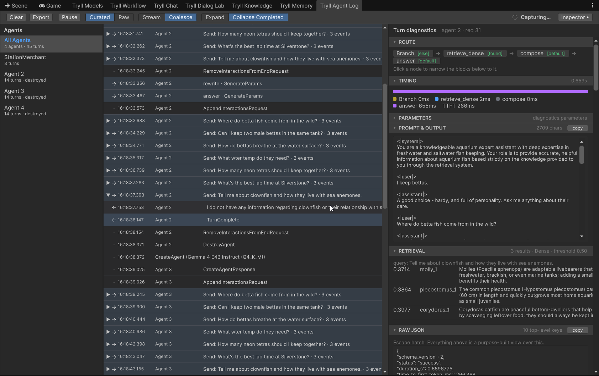

Use the Agent Log¶
Both the Unity and Unreal plugins include an editor-only Agent Log window that shows what this editor process sent and received, per agent — typed turns, voice turns the client sent, deferred variable flushes, lifecycle events, and per-turn diagnostics when available.
It answers questions a transcript cannot: did we actually send that?, what changed between these two turns?, did the tool call come back? It complements the Chat Window (an interactive conversation) and the server monitor (a server-wide browser UI for contributors).
An export contains the conversation
Export writes the journal to a JSON file. That file can include player input, prompts, lore, tool arguments, and turn diagnostics. Treat it like a bug report, not a shareable log.
Scope: one client connection
The Agent Log sees only the agents of this editor process's own connection — editor windows and Play-in-Editor alike, since both share one wire session. It cannot see agents belonging to a standalone build, a Python client, the QA harness, or a second editor instance. An agent missing from the list is not evidence that nothing is happening.
Prerequisites
- The Tryll plugin installed (Unity UPM package or Unreal plugin).
- A running editor session that can create agents — Chat, Dialog Lab, PIE, or your own editor tooling. You do not need the Chat window open.
Open the window¶
Window → Tryll → Agent Log
Window → Tryll → Tryll Agent Log
Opening the window starts capture: it subscribes to the internal client observer and acquires a diagnostics-demand lease, so newly created agents request turn diagnostics. Closing the window releases the lease and unsubscribes, but keeps the journal for the rest of the editor session. Reopening inserts a visible capture gap marker and resumes.
Layout¶

| Pane | Role |
|---|---|
| Agent list | All Agents (first entry) plus every known agent. Selecting an entry filters the timeline. |
| Timeline | Virtualized sent / received / system rows for the current filter, grouped into turns. |
| Inspector | Collapsed by default. Selecting any row shows a panel appropriate to that row's kind. |
Agent list labels prefer the owning GameObject / actor name, then fall back to Agent <id>.
There is no rename UI. Each entry shows its retained turn count; the All Agents entry
shows the agent count and the total across all agents.
Rows carry a fixed-width leading gutter with a direction marker, so the timeline stays readable in greyscale and in a screenshot pasted into a bug report:
| Marker | Row kind |
|---|---|
→ |
Sent — what this client put on the wire |
← |
Received — what the agent sent back |
· |
System — an agent-scoped change (params, variables, KV, pause/resume, create/destroy) |
🎤 |
A voice utterance's final transcript |
How to read a turn¶
The timeline is grouped by turn, not presented as a flat event list. A turn block opens
with the send that started it and closes with TurnComplete. In between you see the work in
the order it happened — for a voice character, typically:
→ Send: who are you?
← TTS format (the turn's first speaking node starts)
← AnswerText (generated text)
← TTS audio (that text, synthesized)
← AnswerText
← TTS audio
← TurnComplete
Completed turns collapse automatically, showing their event count on the header. Click ▶/▼ to expand one; a turn you expand manually stays open.
Rows are events, not their payloads
A turn's detail rows tell you which events occurred, not the full data each carried. For the contents of a turn — the rendered prompt, retrieval hits, tool arguments — select the turn and read the turn inspector.
The toolbar¶
- Coalesce stream (on by default)
- Merges consecutive
AnswerTexttokens on the same turn into one row. Turn it off to see the raw token stream — every token as a separate row. Leave it on to see the turn's rhythm instead: with aGenerateAndSpeaknode, coalescing makes the text → audio → text → audio alternation immediately legible, because TTS and other events still interrupt the stream and split the coalesced rows. Use off for "is the stream actually flowing?", on for "what happened in this turn?". - Collapse completed turns (on by default)
- Hides the body of completed turns you have not expanded. Turn it off and turns stay open as they complete.
- Raw
- Adds session- and connection-scoped traffic that the curated view deliberately omits. See Raw mode below.
- Clear
- Empties the journal, as in any log.
- Pause / Resume
- Stops the window accepting new observations. Useful when something interesting has scrolled past and you do not want it evicted while you read it.
The inspector changes with the row¶
Every row is selectable, and each kind opens a different panel:
| Row kind | What the inspector shows |
|---|---|
| Received turn | The full turn inspector — route, timing, parameters, prompt & output, retrieval, tool calls, raw JSON. |
| Sent | The exact payload put on the wire, its form (typed, client-injected, resume, parameter change), timestamp, request id, and any deferred variable batch that rode along. |
| System | Which node or variable changed, before and after where both are known, and how the server answered — Ack or which error. |
The sent panel is the reason every row is selectable. Client variable writes are staged in a
local mirror and batched onto the wire immediately before the next SendMessage / Resume /
ChangeParams — so the request that carries them is not the one you associate with them.
This window is the only place that association is visible.
What produces which events¶
Different workflow features leave different traces. When testing, these are the cases worth exercising:
- Typed turn
Send→ streamedAnswerText→TurnComplete. The baseline.- Voice input
BeginUtterance(session-scoped), then the final transcript on its own row with a🎤marker. The turn itself is the followingSendMessage, the same path as typed input. TheBeginUtterancerow itself carries no transcript — the transcript arrives when recognition finalizes.- Spoken answer (TTS)
- One
TTS formatrow per turn, when the first speaking node starts, then TTS rows interleaved withAnswerText, each attributed to the node that produced it (plusTTS visemesrows when the agent's voice hasemit_visemeson). No audio is retained — the rows record that synthesis happened and from which node, not the PCM. - Tool calls
ToolCallevents plus apausedsystem event, thenResumewhen the client answers, then the rest of the turn. A tool-calling turn with a pausingdispositionis the richest single case to test, because it exercises sent, received and system rows together.
Classification events need notify_client¶
ClassifyIntent and ClassifyIntentLLM do not emit anything to the client by default —
classification is routing, and routing is invisible on the wire. If you want the classification
to appear in the Agent Log, set notify_client to OnFound or Always on the node.
With it off, an intent-driven workflow produces a turn with no visible sign that classification
happened at all, even though it did — the route is still visible in the
turn inspector, and the detail in its Raw JSON block. With it
on, you get a NodeEvent row per classification.
This is the single most common reason an intent workflow looks like it "isn't classifying" in the log.
Raw mode¶
The curated view carries agent-scoped events only. Raw adds everything else — the session- and connection-scoped traffic that does not belong to any one agent:
· Connected
· CreateSession → session created
· ListModels → models returned
· CreateAgent
· CreateVoiceInput → voice input ready
· DestroyVoiceInput
...
Use it when the curated view is missing something you know happened, or when the question is about session setup rather than a turn — model downloads, load/unload, string- and embedded-storage lifecycle, connect/disconnect.
Raw shows decoded semantic envelopes, not captured TCP frames, and binary payloads retain metadata (kind, byte count, attribution) rather than bytes.
Open before you create agents¶
Diagnostics are requested at CreateAgent time, and enable_diagnostics is a structural
flag — it cannot be turned on for an agent that already exists.
Agents that already existed when you first opened the Agent Log stay listed and still show everything the client knows independently — input, output, modality, timing, lifecycle. But their turns show an explicit "created before diagnostics capture" explanation instead of inspector depth, until you recreate them or create new agents while the window is open.
Component Enable Diagnostics authoring checkboxes are retired. Chat uses a per-create transient override; the Agent Log uses the shared lease. Neither mutates scene or asset fields.
Retention¶
Defaults:
- 200 completed turns per agent
- 4,000 observations per agent
- 4,000 session-scoped observations for Raw mode
Eviction drops the oldest complete turn groups only — never half a turn. Destroyed agents remain in the list until you Clear or the editor reloads.
The All Agents count is a sum, not a cap
The 200-turn bound is per agent. The count on the All Agents entry is the total across every agent, so a session that created many agents — a Dialog Lab run, which creates a fresh agent per variant — legitimately shows several hundred turns there. That is retention working, not failing. Check a single agent's own count to see the bound.
Changing the bounds
The bounds are editor-user configuration with no UI. Set them directly:
EditorPrefs keys Tryll.AgentLog.MaxCompletedTurnsPerAgent,
Tryll.AgentLog.MaxObservationsPerAgent,
Tryll.AgentLog.MaxRawSessionObservations.
Section [TryllAgentLog] in Saved/Config/.../EditorPerProjectUserSettings.ini,
keys MaxCompletedTurnsPerAgent, MaxObservationsPerAgent,
MaxRawSessionObservations.
History does not survive an editor reload — Unity domain reload or Unreal hot reload. After one, the window says history was discarded rather than showing an empty timeline, because an empty window next to demonstrably running agents reads as a broken feature.
Relationship to the server monitor¶
| Agent Log | Server monitor | |
|---|---|---|
| Scope | This editor client's connection | Whole server process |
| Surface | In-editor window | Browser HTTP/SSE UI |
| Best for | What the game client put on the wire, deferred vars, voice turns | Cross-client / server-side workflow turns |
| Protocol | No wire changes | Sidecar; independent of clients |
Neither supersedes the other. Contributor reference for the sidecar:
docs/dev/server-monitor.md in the monorepo.
Export¶
Export, next to Clear, is enabled whenever the journal is not empty, including while
capture is paused. It opens a save dialog whose default name is
TryllAgentLog_<project>_yyyyMMdd-HHmmss.json. Cancelling the dialog writes nothing.
The file is a snapshot taken on the main thread when you click. Capture keeps running while the file is written. Streaming tokens of the same node are merged in the file; the window still shows every event. The format is described in Agent Log format.
Current limitations¶
- Raw mode includes metadata-only envelopes, not just session-scoped rows.
- The reload discard banner appears only after an editor domain reload (Unity) or module hot reload (Unreal), not after Clear.
- The journal is in-memory and bounded. Evicted turns are counted in the export header and are not in the file.
Related¶
- Reference: Turn Inspector — the panel behind a selected turn
- How-to: Inspect Server Memory — server-wide RAM/VRAM, not this connection's traffic
- How-to: Test an Agent in the Editor
- How-to: Compare Dialog Variants
- How-to: Use Voice Input
- How-to: Define and Handle Tool Calls